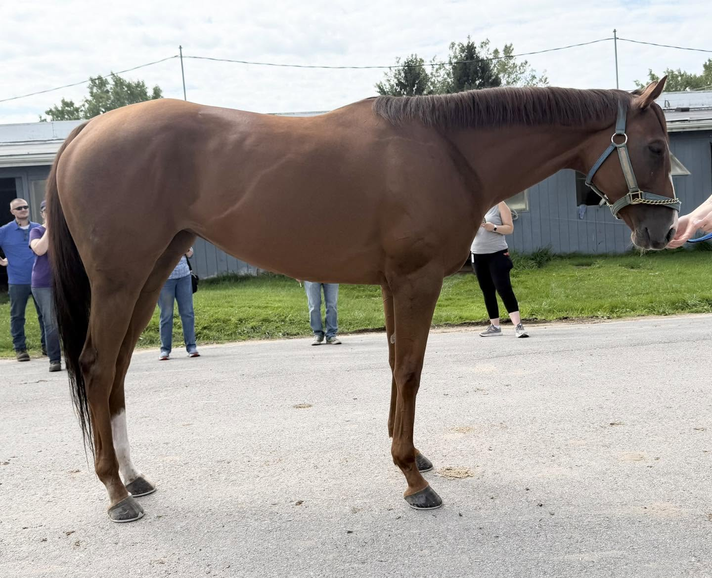
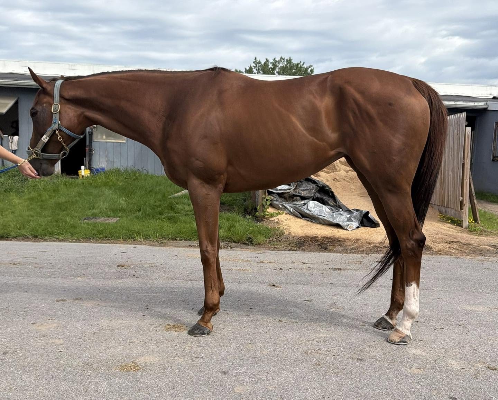
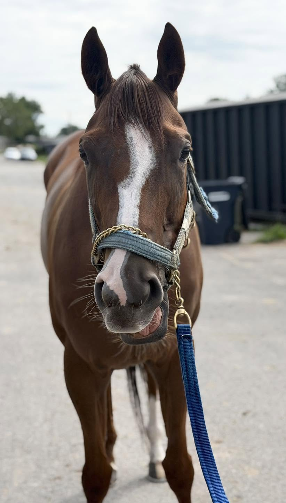
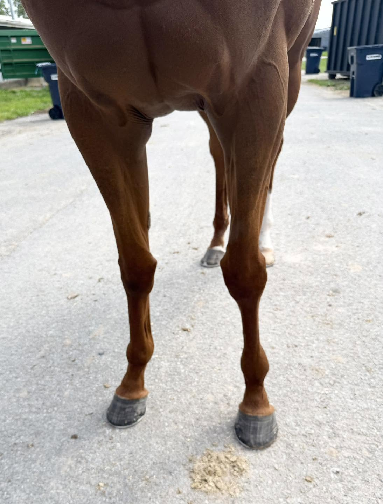
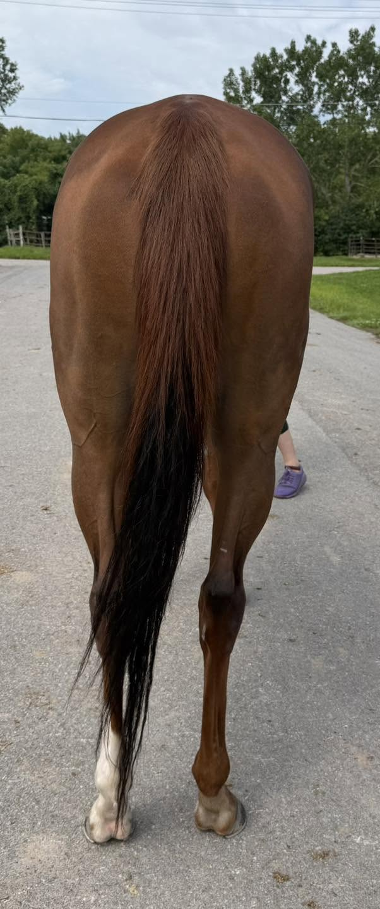
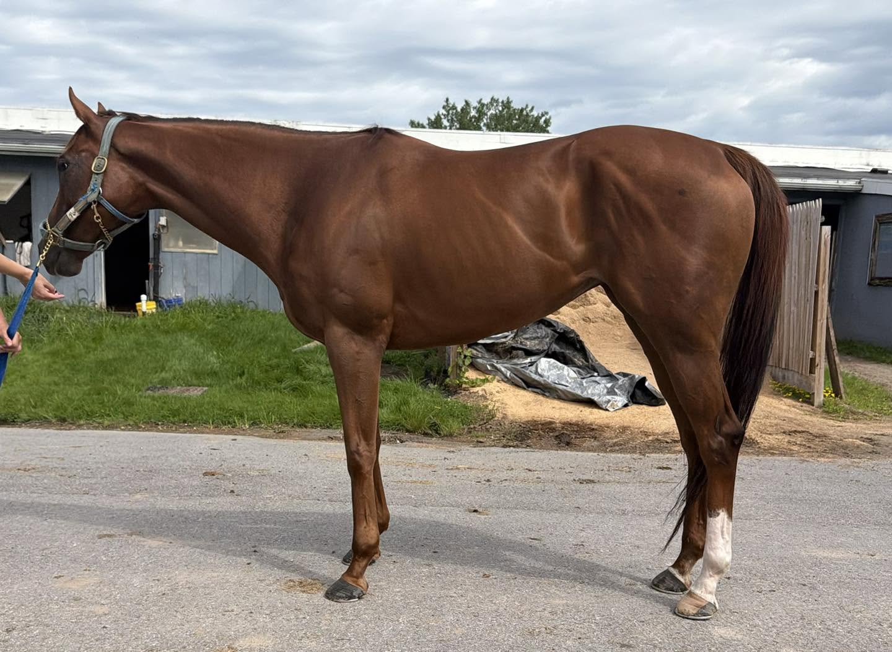
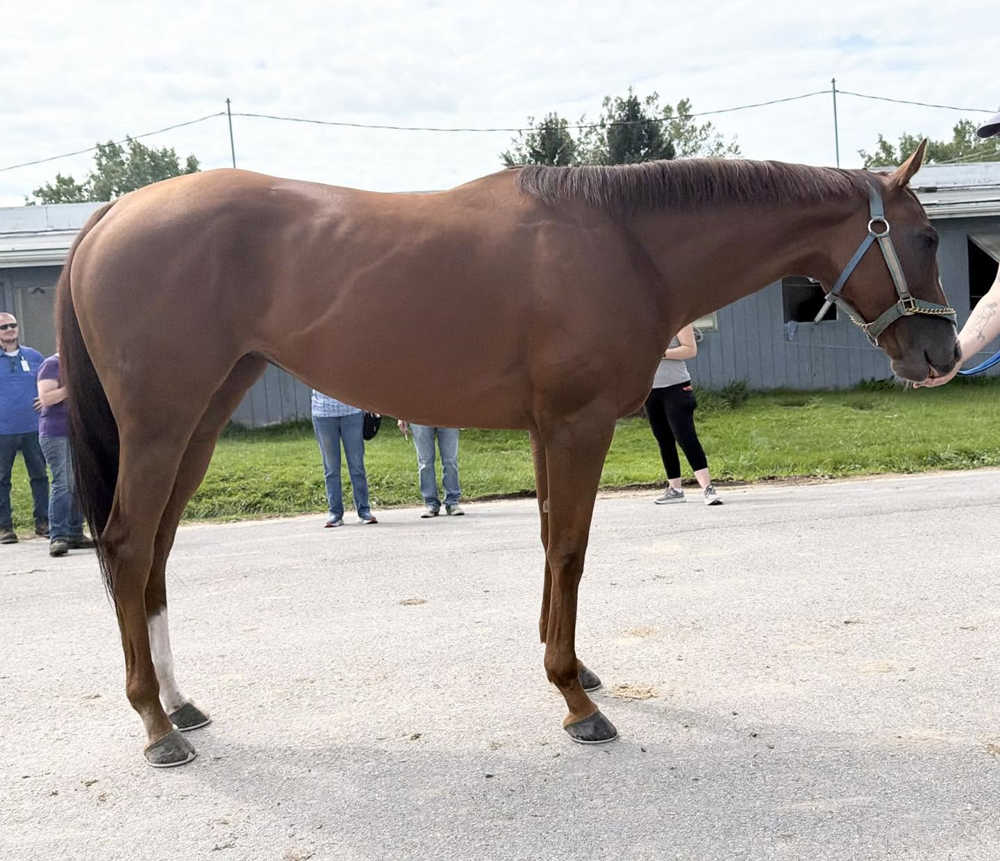

COZEE MAGIC, 2020, 15.3+ h., ch. m. Located at the Finger Lakes Race Track in Farmington, NY (near Rochester, NY).
PLACED
Here’s an adorable mare that smashes ALL of the chestnut mare stereo-types! She’s a super sweet, friendly, affectionate, and a total in-your-pocket type of girl! Just as cute as she can possibly be. We were told that she is lovely to handle, has no stable vices, and even keeps the tidiest stall in the barn. And, those of us with muck responsibilities always appreciate the latter! Her handler said that she’s quiet and polite to work with, and that was totally our observation as well. She’s even been turned out on the farm and gets along well with other horses too. Miss Congeniality with both people and horses.
She has a pretty, soft, shiny coat with a golden sheen and the sweetest face. We liked her balanced, compact build and nice topline- she gives the impression that she might be a very versatile athlete who could easily go in any direction for her second career. We were told that she is sound and she even won her race two starts ago. She does have some rounding on her ankles- we were told that they were old and don’t bother her. We put hands-on and found them to be firm, cold, and set. After racing earlier in the week, she displayed a relaxed walk with an overstep and a rhythmic jog with classic “daisy cutter” type movement. She moved quietly beside her handler, working off a loose lead.
And her personality? One of a total love-bug! She seemed to enjoy the attention as our volunteers and shoppers swarmed around her. She chilled out with us for a while- letting us feel her legs, pick up her feet, feed her peppermints, and she very much enjoyed multiple scritches too. Are you looking for a sweet, cuddly girl who loves affection and being groomed? Here she is!
Cozee Magic is by Good Magic (Curlin) with Hardspun and Danzig on her sire side and out of a Cozzene mare (as her name might have suggested to you). Her pedigree suggests she will be an athletic, all-round, good-minded sport horse.
Please note that references will be required and checked prior to being able to purchase this horse. Please see our post pinned to the top of our FB page for more information.
A PPE is always recommended. For information about vet practices available to do PPEs, and other important information about the buying process, please see the How to Buy menu tab on our website, for info about vets, shippers, etc. at: http://fingerlakesfinesttbs.com/buying-a-finest-horse/ (http://fingerlakesfinesttbs.com/buying-a-finest-horse/)






